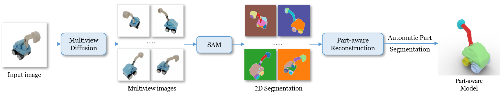

1The University of Hong Kong
2Tsinghua University
3Texas A&M University
*The first two authors contribute equally.
†Corresponding authors.
Recently, the emergence of diffusion models has opened up new opportunities for single-view reconstruction. However, all the existing methods represent the target object as a closed mesh devoid of any structural information, thus neglecting the part-based structure, which is crucial for many downstream applications, of the reconstructed shape. Moreover, the generated meshes usually suffer from large noises, unsmooth surfaces, and blurry textures, making it challenging to obtain satisfactory part segments using 3D segmentation techniques. In this paper, we present Part123, a novel framework for part-aware 3D reconstruction from a single-view image. We first use diffusion models to generate multiview-consistent images from a given image, and then leverage Segment Anything Model (SAM), which demonstrates powerful generalization ability on arbitrary objects, to generate multiview segmentation masks. To effectively incorporate 2D part-based information into 3D reconstruction and handle inconsistency, we introduce contrastive learning into a neural rendering framework to learn a part-aware feature space based on the multiview segmentation masks. A clustering-based algorithm is also developed to automatically derive 3D part segmentation results from the reconstructed models. Experiments show that our method can generate 3D models with high-quality segmented parts on various objects. Compared to existing unstructured reconstruction methods, the part-aware 3D models from our method benefit some important applications, including feature-preserving reconstruction, primitive fitting, and 3D shape editing.
Our method takes a single-view image as input and generates its 3D model with segmented part components. For a single-view input, we first generate its multiview images using multiview diffusion. Then their 2D segmentation masks are predicted with a generalizable 2D image segmentation model, SAM, and part-aware reconstruction is conducted based on these 2D segmentations. Finally, the reconstructed model with part segments is built using an automatic algorithm. Note: for the "2D Segmentation" and "Part-aware Model", different colors indicate different parts.

@inproceedings{liu2024part123,
title={Part123: Part-aware 3D Reconstruction from a Single-view Image},
author={Liu, Anran and Lin, Cheng and Liu, Yuan and Long, Xiaoxiao and Dou, Zhiyang and Guo, Hao-Xiang and Luo, Ping and Wang, Wenping},
booktitle={SIGGRAPH},
year={2024}
}